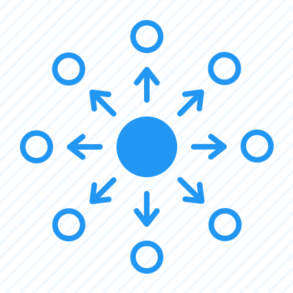
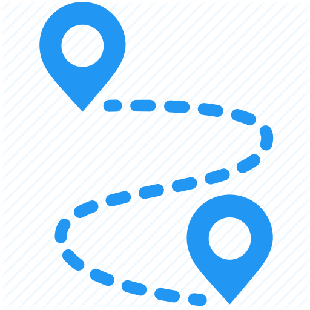
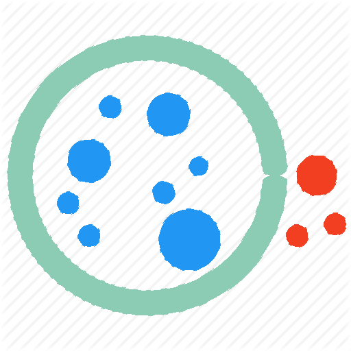

Data-Drive Creativity

Explore

Find Path

CLUSTER
arrow_back
search
Min Hop:
1
2
3
4
5
Global
Local
Show Results
arrow_back
search
search
Min Hop:
1
2
3
4
5
Global
Local
Show Results
arrow_back
Setting
Choose One Method to Cluster
method 1
method 2
Number of Clusters:
Set the Level:
Low
High
Next Step
arrow_back
Clustered Successfully !
Find Path
More Nodes
Global
Local
Choose your FIRST cluster
A-Red
B-Blue
C-Yellow
Choose your SECOND cluster
A-Red
B-Blue
C-Yellow
Show Results
search
+
-
Generate
❮ Previous
Next ❯